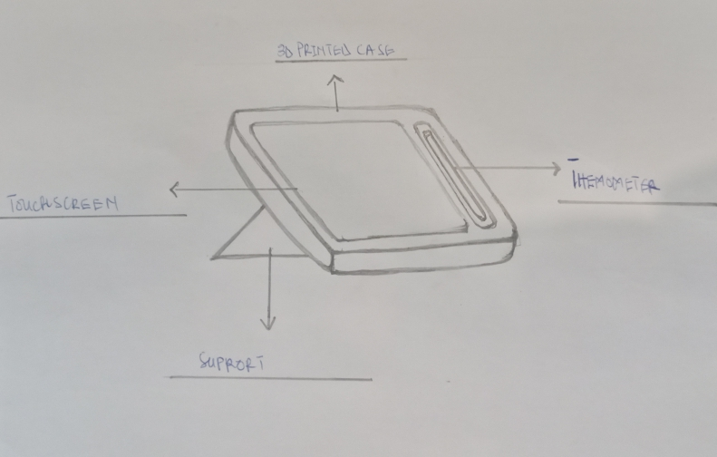

My Device
My innovative healthcare device, MediBot is a user-friendly diagnostic device with a touch screen interface for easy symptom input via images. Additionally, it incorporates a temperature sensor to monitor patients' body temperature. Powered by artificial intelligence, it analyzes symptoms to predict potential diseases. Integrated with the hospital's electronic health record system, it provides real-time diagnostic information to healthcare professionals. This all-in-one device enhances efficiency, accuracy, and patient care by combining advanced diagnostic capabilities with vital signs monitoring.
An image of my device
Project Goals
- Easy recognition of symptoms of the patient
- Improve communication between healthcare providers and patients
- Reduce the number of deaths due to delayed diagnosis
- Enhance user experience through intuitive design and user-friendly interface
- Conduct user testing and gather feedback for continuous improvement
- Implement a secure and confidential data storage system to protect patient information
- Collaborate with healthcare professionals to ensure the design meets their needs and workflows
Tools and Materials
- Raspberry Pi 5
- A touchscreen
- A 3d printer
- A 3d printer filament
- Connection cables
- Temperature sensor
- Screws and drivers
- Meter rule
- A CAD software
- Power supply
- backup power supply
Building the device
Frontend
The interface will be programmed with the Tkinker Python library. The
first page will be a welcome page that tells the patient a little
about the device. A start button will be programmed for the patient to
click and move to the next page. On the next page, there will be a
form that will ask for the patient’s name, age, and hospital
(optional). There will be a next button at the bottom of the form,
which, when clicked, will take the patient to the next page, where he
will select the symptoms. Under each image, there will be a yes and a
no button for the selection. On the next page, a congratulatory
message will be displayed to the patient.Two buttons will be under the
message asking the user whether he wants to send the prediction to the
health provider or print it as a hard copy.
Backend:
The Raspberry Pi 5 will be the system of the device. The Python code
will be written unto it for the process of the date from the user. The
patient’s details from the form will be stored in an object(a data
type of data in programming). Each image of a symptom will be linked
to its name in the backend code. It will be programmed in such a way
that when the patient selects “Yes” the name will be added to the
object in the form of a list. The backend code will use the patient’s
hospital ID to retrieve the patient’s past health record from the
hospital’s Electronic health system if it has one. The data from the
object and the electron health record will be sent to the AI through
an API request and get a prediction as a response. A code will be
written to send the prediction to the health provider’s computer or
can be printed as a hard copy.
The Artificial Intelligence:
THe Chat GPT 3.5 turbo model will be trained on a dataset of about a
billion or half a billion symptoms and their corresponding disease or
illness. The dataset will come from a trusted source like Kaggle and
WHO. Also, the AI will learn from its past users so that it will be
able to make accurate and precise predictions.Insight wil be taken
from professional doctors to enchace the operation of the AI.